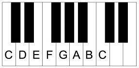

Challenge 3 - Scales
Studying music theory seemed like a good idea at first.
Full of energy, you started reading a bit about notes and, without realizing it, ended up with your head full of chord progressions and modulations.
Before going crazy, you decide to go back to the beginning and study properly this time. Let's go back to the basics:
- For our purposes, there are 7 natural notes: C (Do), D (Re), E (Mi), F (Fa), G (Sol), A (La) and B (Si).
- Each note represents a pitch. It might suprise you, but the difference in pitch between consecutive notes is not a constant, but a proportion, and the proportion is not always the same!
- In particular: C-D, D-E, F-G, G-A and A-B are all a whole step apart, while E-F and B-C are only a half-step apart.
- The note after B in the sequence is called C again, even though it's higher than the first C (its frequency is double, to be exact), and the sequence starts again.
You can clearly see the separation between notes if you look at a piano:

Natural notes are not everything, though! A natural note can be lowered or raised by a half-step. These are the black keys that you can see in the image above (notice there are only black keys between notes that are a whole step apart):
- A natural note raised by half-step becomes a sharp (#).
- A natural note lowered by half-step becomes a flat (b).
So, C raised a half-step becomes C# and G lowered half-step becomes Gb. This is where things start to get confusing:
- What about Cb? Cb is C lowered a half-step but, as you learned before, B-C are half-step apart. This means that Cb and B are the same note!
- What about F#? F# is F raised a half-step and F-G are a whole step apart, which means that F# and Gb are really the same note!
OK, this was easy enough, so let's continue. We listed the natural notes as C,D,E,F,G,A and B. A set of 7 notes ordered by pitch that repeats each octave, like this one, is called a heptatonic scale. There are many different kinds of scales and variants thereof, so let's focus on the simplest ones: the major and natural minor scales.
- Both major and natural minor scales are heptatonic scales. They have seven pitches (notes) per octave.
- The scale is named after the first note (root or tonic) in an octave.
- The notes in a major scale follow the pattern WWHWWWH (W = whole step, H = half-step).
- The notes in a natural minor scale follow the pattern WHWWHWW.
So, going back to C,D,E,F,G,A,B, we can see that it is the scale of C major:
- The root is C.
- If you look closely, it follows the pattern WWHWWWH (C-D is a W, D-E is a W, E-F is a H, ... , B-C is an H)
- Notice that, since B# and C represent the same pitch, B# major and C major also represent the same scale.
Let's look at a natural minor scale too, for instance G minor: G, A, Bb, C, D, Eb, F
- The root is G.
- It follows the pattern WHWWHWW (G-A is a W, A-Bb is an H, Bb-C is a W, ... , F-G is a W)
In summary, there can be a major and natural minor scale for every tonic, and some of them are equivalent to each other. To make matters more complicated, major and minor scales can also have the same set of notes!
Let's take C major and A minor for example:
- As we've already seen, C major is C,D,E,F,G,A,B
- What about A minor? If you take a moment to build the scale, it ends up as A,B,C,D,E,F,G
- Both scales have the same notes, even though they start with a different tonic! We call these relative scales.
- As you might have already guessed, every major scale has a relative minor counterpart (and viceversa).
Pieces of music are usually written following a scale and the scale becomes the key of the piece. For example, this little tune is in C major: C, C, G, G, A, A, G. But as you saw before, it could also be in A minor. In fact, if the only information we have about the piece is those three notes, there are a lot of keys that might fit: A# major, E minor and many more. Pieces of music usually aren't that simple, but for this problem we'll assume only the notes in the scale of the key are used.
That was quite a lot to take in. Before rushing to the next chapter and making the same mistake again, you decide to do some self-study and become familiar with these basic scales. Basically, you'll calculate the possible keys for a given musical piece.
Input
The first line will contain an integer C, the number of cases for the problem.
Each case starts with a line with an integer N, which is the number of notes. If N is not zero a line follows with N strings, each indicating a note.
Output
For each case, there should be a line starting with "Case #x: " followed by a space separated list of all the keys that fit. A key is written as the tonic, preceded by an M (major) or an m (minor). The keys should be sorted alphabetically. Major keys go before minor keys and sharps go after their respective naturals. Equivalent scales that map to the same key should only be printed once. The scale with a natural tonic should be printed if it exists (MC instead of MB#), otherwise the one with a sharp tonic (mF# instead of mGb) should be printed. This means no keys with a flat tonic should be output. Remember that relative scales are not equivalent and thus do not map to the same key. If no key fits the piece the string "None" should be printed. Every line is followed by a new line character.
Examples
Case 1: 7 C C G G A A G | Case 2: 9 E D# E D# E B D C A |
Case 3: 22 E D# E F# G# G# F# G# A A G# C# B A G# D# E F# G# G# F# E |
Case 4: 1 Fb |
Case 5: 0 |
The answer for Case 1: MA# MC MF MG mA mD mE mG. You might recognize this tune as Twinkle Twinkle Little Star.
The answer for Case 2: None. If you recognize the piece you might think
that it is in A minor, however with the available information and our
basic knowledge of the theory it can't be confirmed.
The answer for Case 3: ME mC#. In case you were wondering, it's melody of the first five bars of Étude Op. 10, No. 3 by Chopin.
The answer for Case 4: MA MB MC MD ME MF MG mA mB mC# mD mE mF# mG#. Basically, all the keys contaning the Fb note (which is equivalent to E).
The answer for Case 5 is a list of all the keys.
Limits
- 0 ≤ N ≤ 1000
Sample Input
6 7 C C G G A A G 9 E D# E D# E B D C A 22 E D# E F# G# G# F# G# A A G# C# B A G# D# E F# G# G# F# E 1 E 1 Fb 0
Sample Output
Case #1: MA# MC MF MG mA mD mE mG Case #2: None Case #3: ME mC# Case #4: MA MB MC MD ME MF MG mA mB mC# mD mE mF# mG# Case #5: MA MB MC MD ME MF MG mA mB mC# mD mE mF# mG# Case #6: MA MA# MB MC MC# MD MD# ME MF MF# MG MG# mA mA# mB mC mC# mD mD# mE mF mF# mG mG#